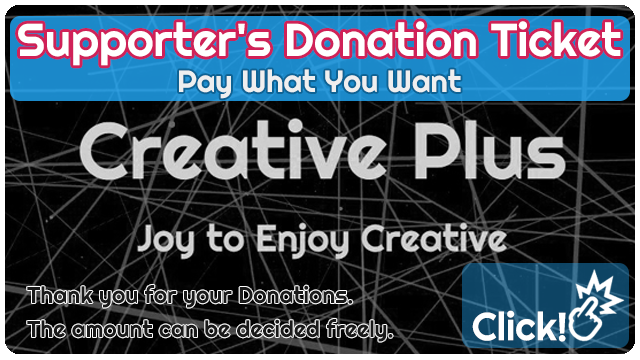

Determines the length of a note according to the tempo.
How to use
- Set the tempo(BPM)
Please use it for calculating the delay time.
If you press the "reference" button, you can hear the delay sound of the calculated length in addition to the quarter note "C" sound.
At the same time, it draws an image that allows you to imagine the sound.
have fun!
- テンポを設定します(BPM)
ディレイタイムの計算などにお使いください。
「reference」ボタンを押すと4分音符の「C」の音に計算結果の長さのディレイ音を聴くことができます。
また、同時に音をイメージできるような映像を描画します。
Donation

If you feel the value, such as "interesting" or "useful", we would be grateful if you could donate with a feeling of support.
The amount can be decided freely.
Thank you for your support.
もし「面白い」「役にたった」など、価値を感じて頂けたなら応援の気持ちとしてご寄付を頂けたら喜びます。
金額は自由に決められます。いつも応援ありがとうございます。